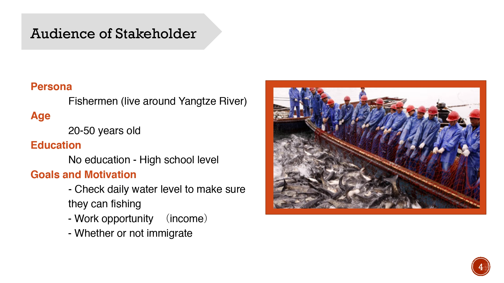
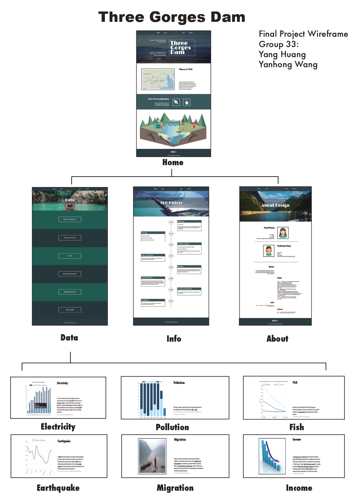

WORKS
This is my project 1.
This is the final project of IAT235 course. This project created a website that could show a communicating complexity with a clear manner. The main issue was trying to clear up for stakeholders involves some kind of human-technical-environmental 'thing', like system, process, phenomenon, institution, etc.. In this project, we focused on how the Three Gorges Dam influenced building Local residences’ life and living condition.
My role in this project.
This is a group project. I was responsible for in the about, info, and the javascrip part of data.
Challenge & Solution
The challenge of this project was to find an relative accurate information about the topic and “human, technology and environment”. Additionally, finding stakeholder is our biggest resistance and how to display a suitable information and images to our stakeholders.
To solve the challenges we used the charts and data to explain the complex the environment changing. And also, narrowing the range and find a specific audience.

Wireframe
For present the clearly idea, I draw a detailed wireframes for website design.The wireframe showed the clearly interactions and workflow.
This is my project 2.
This is a nursery rhyme book with 16 pages. And it is the final project for Publishing 231. This project combinated text and images to create a nursery rhyme book. It asked to examine the expressive of typography and shapes, and understood the connection between meaning with shapes and typographic forms, and graphic elements and typography. And also, this project explored the ideas of sequencing and carrying a narrative within a multi-page format.
My role in this project.
This is an individual project. The nursery rhyme I chose the "I am a little groundhog". In this project, I used the images to text to express each part of selected nursery rhyme.

Challenge & Solution
The difficulty of this project is to use a suitable shape to present the content of the nursery rhyme. In this project, I combine the different design elements, such as points, lines, forms, textures, and colors, to express the narrative. The main character, groundhog, composes of an irregular circle, hair and a pair of teeth. I zoom in the teeth. Because I think it is the symbol of the groundhog. For unity, all elements are put in an irregular circle. There are some design details for the content.